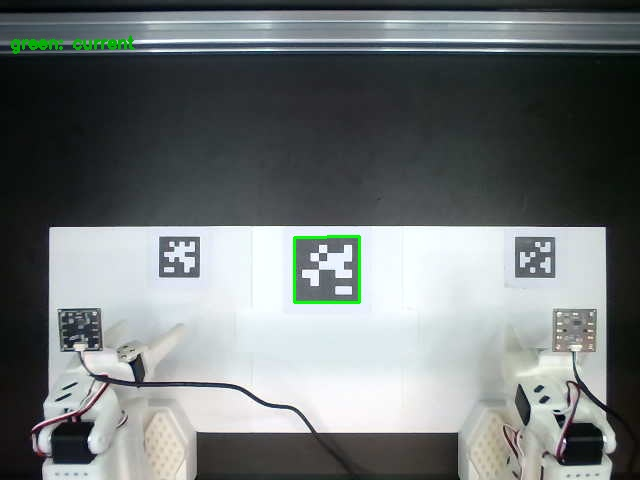

System Calibration 系统标定
BREE calibrates mechanically (arms), visually (global camera overlay) and fiducially (AprilTag save / re-check). Every step has a quantitative gate — the environment is "calibrated" only when all gates pass. BREE 的标定分三层：机械（机械臂）、视觉（全局相机叠加）、基准标记（AprilTag 写入 / 复检）。每一步都有量化门槛——只有所有门槛全部通过，环境才算"已标定"。
- Arms are fully assembled with motors numbered per the SO-101 official procedure. 机械臂已按 SO-101 官方流程完成舵机编号与组装。
- Device permissions granted (chmod 666 /dev/ttyACM*) — re-run after every power cycle. 设备权限已放开（chmod 666 /dev/ttyACM*）——每次断电后需重新执行。
1 · Arm calibration (fixture midpoint)1 · 机械臂标定（限位夹具中点法）
Each of the four arms is calibrated separately with the fixture-based midpoint procedure. Adjust --device, --port and --id per the table below: 四条臂逐一使用限位夹具中点流程标定。按下方表格调整 --device、--port 与 --id：
| Arm机械臂 | Type类型 | Port端口 | Calibration ID标定 ID |
|---|---|---|---|
| Left follower左从臂 | follower | /dev/ttyACM0 | follower_arm_left |
| Right follower右从臂 | follower | /dev/ttyACM1 | follower_arm_right |
| Left leader左主臂 | leader | /dev/ttyACM2 | leader_arm_left |
| Right leader右主臂 | leader | /dev/ttyACM3 | leader_arm_right |
Example — left follower arm:示例——左从臂：
python examples/fixture_midpoint_auto_calibrate.py \
--device follower \
--port /dev/ttyACM0 \
--id follower_arm_left \
--preview-ranges- The script prompts: Put the selected motor(s) into the midpoint fixture... — seat the arm fully in the fixture and press Enter. 脚本提示放入中点夹具（Put the selected motor(s) into the midpoint fixture...）：将机械臂完全放入限位架，确认固定后按 Enter。
- Review the generated calibration and confirm with y + Enter when asked Write this calibration to the motors and save it? [y/N]. 检查生成的标定结果，在询问 Write this calibration to the motors and save it? [y/N] 时确认无误输入 y 并按 Enter。
- The arm then auto-calibrates with large movements — keep it firmly clamped to the table edge. 随后机械臂自动校准，动作幅度较大——请确保其牢牢固定在桌边。
If a previous calibration exists it is backed up automatically, e.g. ~/.cache/huggingface/lerobot/calibration/robots/so_follower/follower_arm_left.json.bak; the new file is written next to it. 若已有旧标定文件会自动备份，如 ~/.cache/huggingface/lerobot/calibration/robots/so_follower/follower_arm_left.json.bak，新文件保存在同目录。
2 · Global camera alignment (image overlay)2 · 全局相机对齐（参考图叠加）
First time only — save the reference view that all rebuilds must reproduce: 仅首次执行——保存所有重建都必须复现的参考画面：
python examples/global_camera_reference_calibrate.py save-reference \
--mode image-overlay \
--camera /dev/video0 --width 640 --height 480 --fps 30 --fourcc MJPG \
--camera-warmup-s 2 --web-host 127.0.0.1 --web-port 8092 --preview-fps 15 \
--output-dir camera_reference/global_imageAfter re-mounting the camera, verify alignment in a browser at http://127.0.0.1:8092 — the page blends 50% reference + 50% live image. Adjust the camera until fixed structures show no ghosting: 重新安装相机后，在浏览器打开 http://127.0.0.1:8092 检查——页面以 50% 参考 + 50% 实时画面叠加显示。调整相机直到固定结构不再出现双影：
python examples/global_camera_reference_calibrate.py check \
--mode image-overlay \
--camera /dev/video0 --width 640 --height 480 --fps 30 --fourcc MJPG \
--camera-warmup-s 2 --web-host 127.0.0.1 --web-port 8092 --preview-fps 15 \
--max-candidates 8 --max-angle-deg 12 --min-length-ratio 0.35 \
--reference camera_reference/global_image/reference.json \
--output-dir camera_check/global_imageWatch: the fixed top beam, the arm base outlines, the table edge, mounting screws / markers, and structures along all four image borders. 重点观察：顶部固定横梁、机械臂底座外轮廓、工作台边缘、固定螺丝或标记，以及画面四周的固定结构。
3 · AprilTag reference — global camera3 · AprilTag 参考——全局相机
Save the AprilTag (36h11, id 0, 80 mm) reference once: 保存一次 AprilTag（36h11，0 号，80 mm）参考：
python examples/apriltag_camera_reference_calibrate.py save-reference \
--camera /dev/video0 --width 640 --height 480 --fps 30 --fourcc MJPG \
--dictionary DICT_APRILTAG_36h11 --tag-id 0 --tag-size-mm 80 \
--samples 50 --timeout-s 30 \
--output-dir camera_reference/standard/globalRe-check after any camera adjustment: 任何相机调整之后执行复检：
python examples/apriltag_camera_reference_calibrate.py check \
--camera /dev/video0 --width 640 --height 480 --fps 30 --fourcc MJPG \
--samples 30 --timeout-s 20 \
--reference camera_reference/standard/global/reference.json \
--output-dir camera_check/current/global \
--center-tolerance-px 3 --scale-tolerance 0.01 --image-rotation-tolerance-deg 0.34 · AprilTag reference — wrist cameras4 · AprilTag 参考——腕部相机
Save references for both wrist cameras (left = tag 1, right = tag 2, both 50 mm): 为两台腕部相机保存参考（左 = 1 号标签，右 = 2 号标签，均为 50 mm）：
python examples/apriltag_camera_reference_calibrate.py save-reference \
--camera /dev/video2 --width 640 --height 480 --fps 30 --fourcc MJPG \
--camera-warmup-s 2 --samples 50 --timeout-s 20 \
--dictionary DICT_APRILTAG_36h11 --tag-id 1 --tag-size-mm 50 \
--output-dir camera_reference/standard/left_wristpython examples/apriltag_camera_reference_calibrate.py save-reference \
--camera /dev/video4 --width 640 --height 480 --fps 30 --fourcc MJPG \
--camera-warmup-s 2 --samples 50 --timeout-s 20 \
--dictionary DICT_APRILTAG_36h11 --tag-id 2 --tag-size-mm 50 \
--output-dir camera_reference/standard/right_wristVerify both wrist cameras against their references: 对两台腕部相机执行核对：
python examples/apriltag_camera_reference_calibrate.py check \
--camera /dev/video2 --width 640 --height 480 --fps 30 --fourcc MJPG \
--camera-warmup-s 2 --samples 50 --timeout-s 20 \
--reference camera_reference/standard/left_wrist/reference.json \
--center-tolerance-px 5 --scale-tolerance 0.02 --image-rotation-tolerance-deg 0.5 \
--output-dir camera_check/left_wrist/run1python examples/apriltag_camera_reference_calibrate.py check \
--camera /dev/video4 --width 640 --height 480 --fps 30 --fourcc MJPG \
--camera-warmup-s 2 --samples 50 --timeout-s 20 \
--reference camera_reference/standard/right_wrist/reference.json \
--center-tolerance-px 5 --scale-tolerance 0.02 --image-rotation-tolerance-deg 0.5 \
--output-dir camera_check/right_wrist/run15 · Reading the results5 · 读懂检查结果
Each check writes alignment.jpg — red box = saved reference, green box = current detection — plus a machine-readable alignment.json with: 每次检查都会生成 alignment.jpg——红框 = 保存的参考、绿框 = 当前检测——以及机器可读的 alignment.json，包含：
- center_error_px — tag center displacement标签中心位移
- scale_ratio — distance / zoom change距离 / 缩放变化
- image_rotation_error_deg — in-plane rotation error面内旋转误差
- corner_rms_error_px — corner-wise RMS error角点 RMS 误差
- within_tolerance — automated pass / fail verdict自动通过 / 失败判定
Acceptance thresholds验收阈值
| Camera相机 | Center error中心误差 | Scale change尺度变化 | Rotation error旋转误差 | within_tolerance自动判定 |
|---|---|---|---|---|
| Global (tag 0 · 80 mm)全局（0 号 · 80 mm） | ≤ 3 px | ≤ 1% | ≤ 0.3° | true |
| Left wrist (tag 1 · 50 mm)左腕（1 号 · 50 mm） | ≤ 5 px | ≤ 2% | ≤ 0.5° | true |
| Right wrist (tag 2 · 50 mm)右腕（2 号 · 50 mm） | ≤ 5 px | ≤ 2% | ≤ 0.5° | true |

Final checklist最终检查清单
- All four arms calibrated via the midpoint fixture, fresh .json files written. 四条臂均已通过限位夹具中点流程标定，新的 .json 文件已写入。
- Global camera overlay check shows no ghosting on fixed structures. 全局相机叠加检查中，固定结构无双影。
- All three cameras report within_tolerance = true. 三台相机全部报告 within_tolerance = true。
- Reference files stored under camera_reference/standard/ and kept under version control. 参考文件保存在 camera_reference/standard/ 并纳入版本管理。
The environment is calibrated and identical to the reference site. You are ready to run evaluations. 环境已完成标定，与参考站点完全一致。可以开始运行评估了。